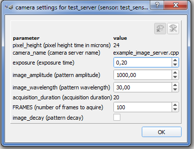

$$qf_commondoc_header.start$$ $$qf_commondoc_header.separator$$ Camera Plugins $$qf_commondoc_header.end$$
Overview
This plugin communicates with a TCP/IP server, which interacts with the camera. A small set of commands are used to control the camera. An example server, documenting this is contained in the examples directory ($$plugin_info:examplesdir:cam_server$$) of this plugin.
Each camera should implement two modes of operations (although the "live-view" mode may be sufficient):
- live-view mode ("polling mode"): In this mode, Quickfit polls single frames from the camera. It does not impose any constraints on the timing of the acquisition. the only condition is, that as soon, as a request for a new frame arrives, the camera should acquire a frame and send it back to QuickFit. This is a mode, usually used for previews (e.g. in the B040 SPIM plugin) and to acquire image stacks. In the latter case QuickFit will move the stages to the new position and then acquire a single (or multiple) frames.
- acquisition mode: In this "free running" mode, QuickFit simply tells the camera to perform an acquisition according to a specified configuration of the camera. During the acquisition, QuickFit may ask the camera, whether the acquisition is already complete, or cancel the acquisition. No other interactions are necessary. in this mode, the camera (server) is also responsible fro writing the resulting image or images to harddisk into one or more files, based in a filename-prefix, provided by QuickFit. After the acquisition, QuickFit may ask for a list of created files. This mode is usually used for camera-timed acqusitions, such as fast image stacks with a well-defined framerate for imaging FCS. It could also be used for other hardware-triggered acquisitions (such as image stacks, where the stages trigger the camera, often called "spooling mode" in the camera driver), provided the camera server also controls the triggering hardware (e.g. stages). Typically in this mode you should write the data in a well-known data format, such as TIFF to harddisk. Then e.g. the imaging FCS plugin or image stack plugin may read the data into a QuickFit project. You can find a simple and fast TIFF writer library (TinyTIFF) also in the mentioned examples directory.
In addition top these two acquisition modes, QuickFit provides a possibility to configure the camera. For this the camera server defines a set of camera parameters (of type, int/float/bool/string), which may be writeable or read-only. QuickFit then provides dialog to edit these parameters and sends them to the camera server before any acquisition. So you can use these parameters to configure your camera (e.g. gain, exposure times, file-formats, ...).
Configuration File
The camera servers are configured by a global configuration file cam_server.ini. It is stored in the global configuration directory. You may change some of the configuration options in the associated config directory which will show up, if - and only if - you have write access to this file. If the file does not exist, the plugin will load (but not write) to the file cam_server.ini either in the user config directory, or in the assets directory ($$plugin_info:assetsdir:cam_server$$) for the plugin.
In the cam_server.ini you will have to tell the plugin which camera servers are available. This is done inside a [cameraN] block for each server N (default values are underlined):
[cameraN]
host = IP adress of the server (e.g. 127.0.0.1)
port = TCP/IP port, used by the server (e.g 51234)
camera_name = a name for the camera
sensor_name = a name for the xensor of the camera
answer_bits = bits per sample of the images transfered by the server
timeout_connection = timeout, when connecting to the server (in milliseconds)
timeout_instruction = timeout, when sending an instruction to the server (in milliseconds)
has_single_parameter_get = ( true | false ) indicates, whether the instruction PARAMETER_GET is implemented or only PARAMETERS_GET
has_progress_instruction = ( true | false ) indicates, whether the instruction PARAMETER_GET can read the parameter PROGRESS
has_cancel_instruction = ( true | false ) indicates, whether the instruction PARAMETER_GET can read the parameter PROGRESS
The number of camera servers is stored in the variable camera_count.
Here is an example configuration file for the example server from the examples directory, running on the same computer as Quickfit (loopback IP adress: 127.0.0.1):
[General]
camera_count=1
[camera1]
port=51234
host="127.0.0.1"
camera_name="test_server"
sensor_name="test_sensor"
answer_bits=16
timeout_connection=10000
timeout_instruction=2000
Communication Protocol
$$startbox_see$$
There are example C++ projects for camera servers available in $$plugin_info:examplesdir:cam_server$$.
$$endbox$$
The basic communication protocol is mostly text-based and rather simple:
- The server listens to a TCP/IP port, until it recognizes a (single) incoming connection. The connection is accepted.
- The server now awaits instructions (see below) as text. Each instruction ends with a double-linebreak "\n\n". If parameters are required, they follow the instruction name after a single linebreak "\n" character.
- The server answers on most instructions (see below) by sending text data back. Each message ends by a double-linebreak "\n\n". If several parameters are returned, they are typically separated by single line-breaks "\n". The only exception is the commend IMAGE_NEXT_GET, which contains a field of binary data (of known size) in its result.
These instructions are defined:
- CONNECT\n\n: connect the server to the camera and initialize the camera. This is usually the first command after opening the connection (socket).
parameters: none
answer: "ACK_CONNECT\n\n"
- DISCONNECT\n\n: disconnect from camera and deinitialize the device. After calling this command, the connection (socket) is typically closed.
parameters: none
answer: "ACK_DISCONNECT\n\n"
- LIVE_START\n\n: start and initialize the live-view mode. This has to be called before calling IMAGE_NEXT_GET. Right before calling this command, Quickfit will send all camera parameters with the configuration to use for the live-view, using several calls of PARAMETER_SET.
parameters: none
answer: "ACK_LIVE_START\n\n"
- LIVE_STOP\n\n: stops the live-view mode.
parameters: none
answer: "ACK_LIVE_STOP\n\n"
- IMAGE_NEXT_GET\n\n: requests a new preview frame.
parameters: none
answer: "IMAGE<bits_per_sample>\n<frame_width>\n<frame_height>\n<frame_binary_data><acquisition_parameters>\n\n" In this result, <frame_binary_data> contains the frame data as binary (unsigned integers of width <bits_per_sample>)and has a length of <frame_width>*<frame_height>*<bits_per_sample>/8 bytes. The field <acquisition_parameters> has the same format, as the output of the command PARAMETERS_GET (see below, but the fields after the parameter description may be omitted). Here is an example answer for 16-bit data:$$codeexample:IMAGE16\n
128\n
64\n
<frame_binary_data>
PARAM_FLOAT;exposure_time;0.2;exposure time in seconds\n
PARAM_INT;frame_width;128;frame width [pixels]\nPARAM_INT;frame_height;128;frame height [pixels]\n\n$$
- SIZE_X_GET\n\n: returns the current frame-width (frame_width_in_pixels) in pixels.
parameters: none
answer: "frame_width_in_pixels\n\n"
- SIZE_Y_GET\n\n: returns the current frame-height (frame_height_in_pixels) in pixels.
parameters: none
answer: "frame_height_in_pixels\n\n"
- GET_EXPOSURE\n\n: returns the current exposure time (exposure_time_seconds) in seconds.
parameters: none
answer: "exposure_time_seconds\n\n"
- PARAMETER_GETS\n\n: returns all acqusition parameters as a list, separated by single line-breaks (\n).
parameters: none
answer: "{ (PARAM_FLOAT | PARAM_INT | PARAM_BOOL | PARAM_STRING);<parameter_name>;<parameter_value_as_string>;<parameter_description_as_string>;[<param_range_min>];[<param_range_max>];[(RW|RO)}\n }* \n". The last parameter tells QuickFit, whether the parameter is editable (RW) or not (RO).
$$note:There re two special parameters, which should be returned, but will not be shown to the user: HAS_INSTRUCTION_PROGRESS (boolean) and HAS_INSTRUCTION_CANCEL_ACQUISITION (boolean): The first one indicates, that PARAMETER_GET may be used to ask for the property PROGRESS, which is an integer number (0..100), that reports on the current progress of a running image acquisition. the second parameter returns true, if the instruction CANCEL_ACQUISITION is implemented in the server.$$
$$note:There are two parameters PROGRESS and ACQ_RUNNING, which may only be requetsed by the sister instruction PARAMETER_GET (see below). These indicate the current progress of an acquisition and qhether an acquisition is running.$$
Here is an example output of the instruction:
$$codeexample:PARAM_FLOAT;pixel_height;24.000000;pixel height time in microns;;;RO\n
PARAM_STRING;camera_name;example_image_server.cpp;camera server name;;;RO\n
PARAM_FLOAT;exposure;0.100000;exposure time;0;1;RW\n
PARAM_FLOAT;image_amplitude;1000.000000;pattern amplitude;0;10000;RW\n
PARAM_FLOAT;image_wavelength;30.000000;pattern wavelength;0;100;RW\n
PARAM_FLOAT;acquisition_duration;10.000000;acquisition duration;0;100;RO\n
PARAM_INT;FRAMES;100;number of frames to aquire;0;100000;RW\n
PARAM_BOOL;image_decay;false;pattern decay;;;RW\n
PARAM_BOOL;HAS_INSTRUCTION_PROGRESS;true;;;;RO\n
PARAM_BOOL;HAS_INSTRUCTION_CANCEL_ACQUISITION;true;;;;RO\n\n$$
From these parameters, QuickFit can derive a dialog, where the user can set the RW parameters:

- PARAMETER_GET\n<parameter_name>\n\n: sends back the current value (and meta-info) of the given parameter (see also the notes of the instruction PARAMETERS_GET.
parameters: name of the requested parameter
answer: "(PARAM_FLOAT | PARAM_INT | PARAM_BOOL | PARAM_STRING);<parameter_name>;<parameter_value_as_string>;<parameter_description_as_string>;[<param_range_min>];[<param_range_max>];[(RW|RO)}\n\n"
- SET_PARAMETER\n<parameter_name>\n<new_value>\n\n:.
parameters: a parameter name and a new value (as text)
answer: none
- RECORD\n<output_filenames_basename>\n\n: initializes and starts a free-running image acquisition.
parameters: a basename, from which the output files are derived, e.g. <output_filenames_basename>.tiff for the main output file.
answer: "( FILE;<file_format>;<filename>;<file_description>\n )* <acquisition_parameters>\n\n" Here the FILEs-listing returns a list of all files, that the acquisition will create. For each file, the filetype, the filename and a short description is returned. Finally the <file_description> returns all parameters of the acquisition, as they would also be returned by PARAMETERS_GET. gere is an example: $$codeexample:FILE;TIFF;c:\temp\test_001_.tif;acquired frames\n
FILE;TXT;c:\temp\test_001_.txt;additional text output\n
PARAM_FLOAT;pixel_width;24.000000;pixel width time in microns;;;RO\n
PARAM_FLOAT;pixel_height;24.000000;pixel height time in microns;;;RO\n
PARAM_STRING;camera_name;example_image_server.cpp;camera server name;;;RO\n
PARAM_FLOAT;exposure;0.200000;exposure time;0;1;RW\n
PARAM_FLOAT;image_amplitude;1000.000000;pattern amplitude;0;10000;RW\n
PARAM_FLOAT;image_wavelength;30.000000;pattern wavelength;0;100;RW\n
PARAM_FLOAT;acquisition_duration;20.000000;acquisition duration;0;100;RO\n
PARAM_INT;FRAMES;100;number of frames to aquire;0;100000;RW\n
PARAM_BOOL;image_decay;false;pattern decay;;;RW\n
PARAM_BOOL;HAS_INSTRUCTION_PROGRESS;true;;;;RO\n
PARAM_BOOL;HAS_INSTRUCTION_CANCEL_ACQUISITION;true;;;;RO\n\n$$
- CANCEL_ACQUISITION\n\n: cancels the acquisition.
parameters: none
answer: "ACK_CANCEL_ACQUISITION\n\n"
License
This plugin is licensed under the terms of the GNU Lesser general Public License (LGPL) version >=2.1.